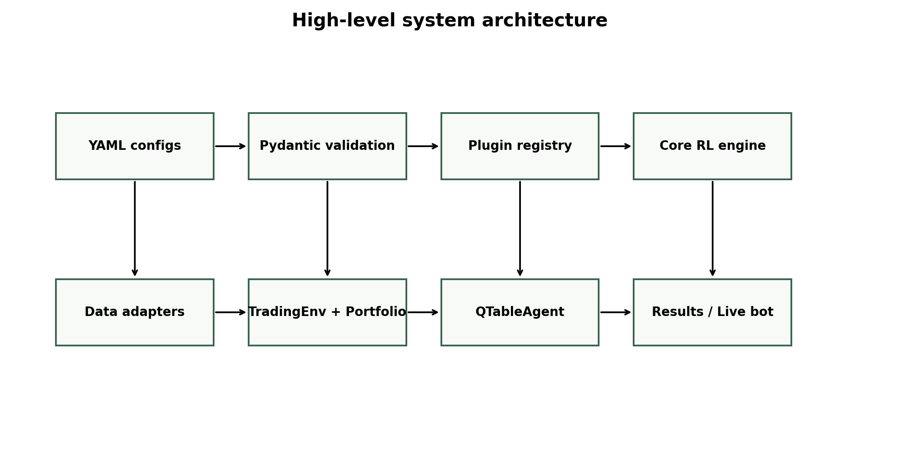
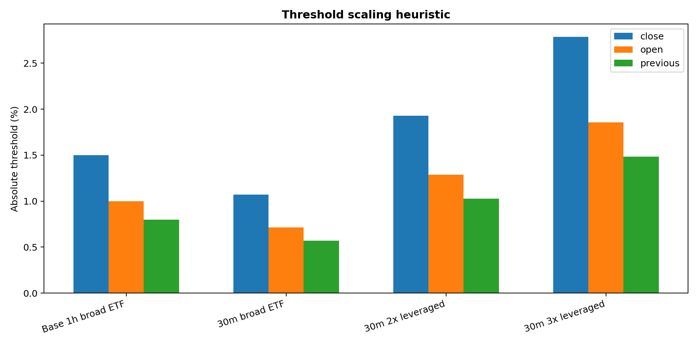
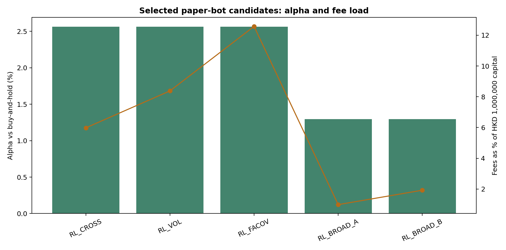
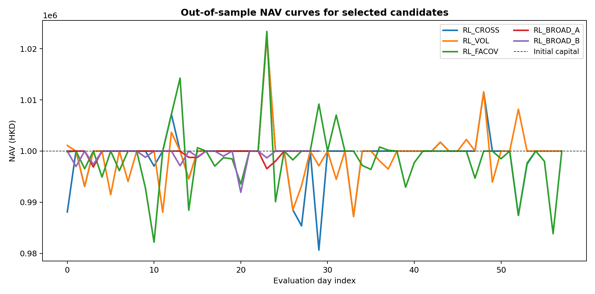
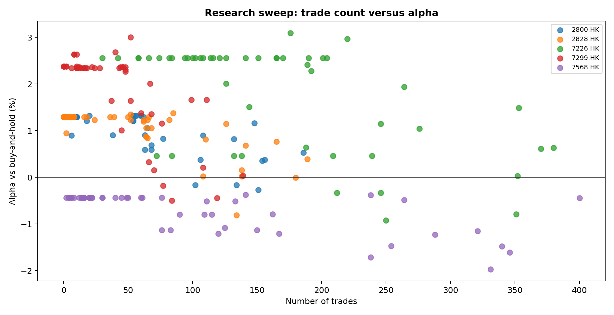
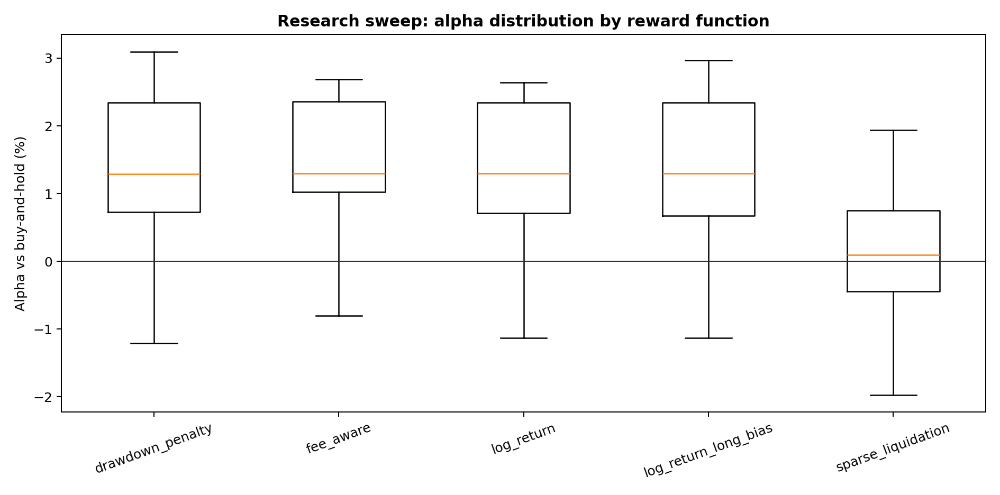

Architecture, methodology, experimental results, deployment model, and technical limitations
This report documents a Python-based reinforcement-learning research system for intraday Hong Kong ETF paper trading through the Quantphemes API. The system uses tabular Q-learning, YAML-configured experiments, modular plugins for data sources, state encoders, reward functions, and agents, and a shared core between offline backtesting and live paper execution. The project is research-oriented: negative or unstable trading performance is treated as evidence about model, data, and fee constraints rather than as implementation failure. Results indicate that transaction costs, state coverage, and backtest/live parity are the dominant technical concerns for continued development.
Keywords: reinforcement learning; Q-learning; algorithmic trading; Hong Kong ETFs; paper trading; Quantphemes; tabular policy; transaction costs.
The project investigates whether simple tabular reinforcement-learning policies can make useful intraday allocation decisions for Hong Kong exchange-traded funds (ETFs). The original production-oriented asset was 2800.HK, while the broader research workflow also tests related ETFs such as 2828.HK and leveraged ETFs such as 7226.HK.
The research question is practical rather than purely theoretical: can a small, inspectable Q-table policy learn when to hold cash, partial exposure, or full exposure after accounting for one-side transaction fees, lot-size constraints, and end-of-day flattening? The system is therefore designed around reproducibility, auditability, and explainability.
The source code is available at https://github.com/YelamanKarassay/Algo-Trading-RL. The project documentation portal is available at https://yelamankarassay.github.io/Algo-Trading-RL/.
The repository is a modular Python monolith using a src/ layout. Core reusable code lives under src/quantphemes_rl/, while executable workflows live under apps/. This separation makes the research runner, comparison tools, federation tool, Webull downloader, and live bot share the same domain logic.

The central design pattern is a lightweight plugin registry. Four extension points are registered by name: data_source, state_encoder, reward_function, and agent. This allows new research hypotheses to be expressed mostly as YAML changes rather than new control-flow branches.
| Layer | Main files | Responsibility |
|---|---|---|
| Configuration | src/quantphemes_rl/config.py | Load YAML, resolve inheritance, validate experiment settings with Pydantic. |
| Data | data/base.py, csv_source.py, futu_source.py, bloomberg_source.py | Normalize vendor files into Hong Kong-time OHLCV bars. |
| Model | agent/qtable.py, state/, reward/ | Encode state, select actions, update Q-values, compute rewards. |
| Simulation | env/trading_env.py, portfolio/portfolio.py | Simulate intraday decisions, cash, shares, lots, fees, and force-close behavior. |
| Applications | apps/run_experiment.py, apps/bot.py, apps/research_sweep.py | Train experiments, run live paper bots, generate research grids. |
Historical bars are stored as OHLCV data with Hong Kong timezone timestamps. The main practical sources used in the project are Webull and Futu exports. Bloomberg XLSX import support exists in the repository, but it was not the primary data path for the current experiment batch. Webull's market-data documentation states that its Market Data API supports historical and snapshot data for Hong Kong stocks and ETFs, including OHLCV candlestick bars (Webull, n.d.).
Every trading day is converted into a DayData object. A day is rejected if any required decision-time bar is missing. This is important because the agent expects exact state transitions at configured times such as 10:00, 10:30, and 15:30, with a 16:00 force-close price.
The portfolio value, or NAV, is cash plus marked-to-market shares:
where Vt is portfolio value, Ct is cash, qt is the number of ETF shares, and Pt is the ETF price at decision time t.
The baseline reward is the log portfolio return:
Using log returns is convenient because returns compound additively over time. However, the reward includes fee impact through Vt+1, so unnecessary trades are penalized naturally. Some research variants add extra penalties for fees or drawdown.
The fee-aware reward variant adds an explicit normalized fee penalty:
where Ft is the transaction fee paid during the transition and λ controls how strongly additional fee spending is penalized.
Q-learning estimates the value of taking an action in a state and then following the best-known future action. The implemented update follows the standard tabular form described by Watkins and Dayan (1992):
The table has one slice per decision point. A 30-minute binary model has shape 9 x 27 x 2. A ternary model has three actions and therefore shape 9 x states x 3.
The baseline state encoder uses three relative price features: current price versus yesterday's close, current price versus today's open, and current price versus the previous decision price. Each feature is mapped into three bins: below threshold, inside threshold, or above threshold. The baseline state index is:
Thus, three features with three bins each produce 3^3 = 27 states. Research encoders extend this with RSI, volatility, volume, or z-score normalization.
Ternary-action bots use three position levels:
| Action | Meaning | Purpose |
|---|---|---|
| 0 | Cash | Avoid exposure when expected edge does not overcome fees. |
| 1 | Half position | Allow partial exposure when signal confidence is moderate. |
| 2 | Full position | Take maximum allowed exposure when signal is strongest. |
The threshold values are not direct statistical optimizations; they are structured research heuristics. The broad ETF one-hour base thresholds are close ±1.50%, open ±1.00%, and previous-decision ±0.80%. For 30-minute bars, these were divided by 1.4 to account for the shorter decision interval. Therefore, broad ETF 30-minute thresholds are approximately close ±1.07%, open ±0.71%, and previous ±0.57%.
Leveraged ETFs receive wider thresholds because their intraday moves are larger. A 2x leveraged ETF uses an additional 1.8 multiplier, while a 3x leveraged ETF uses a 2.6 multiplier.

The research sweep compared assets, reward functions, encoders, and action spaces. The selected paper bots were not chosen as final production winners, but as a small live-observation portfolio. This is important: paper trading is used to study execution behavior, state stability, fee pressure, and model behavior under real-time scheduling.
| Bot | Asset | Reward | Encoder | Actions | Alpha | Sharpe | Trades | Total fees |
|---|---|---|---|---|---|---|---|---|
| RL_CROSS | 7226.HK | drawdown_penalty | three_feature | 2 | 2.56% | -0.172 | 30 | HKD 59,795 |
| RL_VOL | 7226.HK | drawdown_penalty | with_volatility | 2 | 2.56% | -0.132 | 42 | HKD 83,814 |
| RL_FACOV | 7226.HK | fee_aware | zscore_bins | 3 | 2.56% | -0.187 | 96 | HKD 125,729 |
| RL_BROAD_A | 2800.HK | fee_aware | zscore_bins | 3 | 1.29% | -0.407 | 10 | HKD 9,902 |
| RL_BROAD_B | 2828.HK | log_return | with_volatility | 3 | 1.30% | -0.426 | 18 | HKD 19,263 |


The most important practical finding is that transaction cost dominates many intraday ETF decisions. A one-side fee of 20 basis points implies an approximate 40 basis-point round-trip hurdle. If a typical intraday price move is smaller than this hurdle, the optimal learned behavior may rationally be cash or very low turnover.


| Experiment | Asset | Reward | Encoder | Actions | Alpha | Trades |
|---|---|---|---|---|---|---|
| research_7226_30m_drawdown_penalty_with_volatility_ternary | 7226.HK | drawdown_penalty | with_volatility | 3 | 3.09% | 176 |
| research_7299_30m_drawdown_penalty_with_volume_ternary | 7299.HK | drawdown_penalty | with_volume | 3 | 3.00% | 52 |
| research_7226_30m_log_return_long_bias_zscore_bins_ternary | 7226.HK | log_return_long_bias | zscore_bins | 3 | 2.97% | 220 |
| research_7299_30m_fee_aware_zscore_bins_ternary | 7299.HK | fee_aware | zscore_bins | 3 | 2.69% | 40 |
| research_7299_30m_drawdown_penalty_with_volume_binary | 7299.HK | drawdown_penalty | with_volume | 2 | 2.64% | 8 |
| research_7299_30m_log_return_with_volume_binary | 7299.HK | log_return | with_volume | 2 | 2.64% | 8 |
| research_7299_30m_fee_aware_with_rsi_binary | 7299.HK | fee_aware | with_rsi | 2 | 2.64% | 10 |
| research_7226_30m_fee_aware_with_volatility_ternary | 7226.HK | fee_aware | with_volatility | 3 | 2.56% | 141 |
| research_7226_30m_log_return_zscore_bins_binary | 7226.HK | log_return | zscore_bins | 2 | 2.56% | 94 |
| research_7226_30m_log_return_long_bias_three_feature_ternary | 7226.HK | log_return_long_bias | three_feature | 3 | 2.56% | 170 |
The table above lists the top research-sweep experiments available in the local results/ folder at report-generation time. These should be treated as hypotheses for review rather than final trading claims.
The live paper bot loads a production YAML and a trained q_state.pkl artifact. It builds the configured state encoder and agent, waits for the Hong Kong session, fetches current price data, computes a target quantity, and sends holding updates through the Quantphemes API. Quantphemes provides the broker-facing API used for portfolio and strategy interactions (Quantphemes, n.d.).
The live bot writes one JSON log line per decision. Each line includes the timestamp, state tuple, state index, action, price, target quantity, current quantity, dry-run flag, and status. This is important for auditability because each live action can be traced back to a state and Q-table decision.
This project is a research system, so discovering weak strategies or implementation risks is part of the outcome. The following limitations are the most important:
| Limitation | Impact | Recommended response |
|---|---|---|
| Transaction cost hurdle | Many intraday moves are too small to overcome 40 bps round-trip cost. | Keep fee-aware rewards, lower turnover, and compare against oracle and buy-and-hold. |
| State coverage | Expanded encoders can create sparse Q-table cells. | Track coverage; avoid deploying poorly visited policies. |
| Backtest/live drift risk | Live state construction must exactly match the training environment. | Add parity tests comparing live context to TradingEnv. |
| Undocumented price endpoints | API behavior may change without warning. | Keep undocumented calls isolated and add robust error handling. |
| Tabular model capacity | Q-tables cannot learn rich nonlinear patterns. | Consider DQN only after backtest/live parity and data quality are stable. |
A particularly important critique is the need to keep live state construction identical to backtest state construction. If the live bot computes a feature differently from the training environment, the deployed Q-table may receive states it was not actually trained to handle. This type of mismatch is more dangerous than poor backtest performance because it can silently invalidate the experiment.
The most useful next steps are engineering-first rather than model-complexity-first. Before adding deep reinforcement learning, the system should improve live/backtest parity tests, artifact/config compatibility checks, daily bot health reports, and broker reconciliation logs.
After these controls are stronger, DQN-style models could be explored, following the broader line of deep reinforcement learning research represented by Mnih et al. (2015). However, model complexity should be justified only if the simpler Q-table system is demonstrably limited by representation capacity rather than by data quality, fees, or execution assumptions.
The Quantphemes RL project implements a coherent research-to-paper-trading workflow. Its strongest engineering qualities are reproducible YAML experiments, modular plugins, explicit fee and portfolio accounting, structured diagnostics, and a deployable paper-bot path. The main scientific conclusion is cautious: tabular reinforcement learning is useful as an explainable experimental framework, but transaction costs, state coverage, and live parity are currently more important than adding more complex models.
Markowitz, H. (1952). Portfolio selection. The Journal of Finance, 7(1), 77-91. https://doi.org/10.2307/2975974
Mnih, V., Kavukcuoglu, K., Silver, D., Rusu, A. A., Veness, J., Bellemare, M. G., Graves, A., Riedmiller, M., Fidjeland, A. K., Ostrovski, G., Petersen, S., Beattie, C., Sadik, A., Antonoglou, I., King, H., Kumaran, D., Wierstra, D., Legg, S., & Hassabis, D. (2015). Human-level control through deep reinforcement learning. Nature, 518(7540), 529-533. https://doi.org/10.1038/nature14236
Quantphemes. (n.d.). Quantphemes API documentation. Retrieved June 9, 2026, from https://api.quantphemes.com/swagger-ui/index.html
Sharpe, W. F. (1966). Mutual fund performance. The Journal of Business, 39(1), 119-138. https://doi.org/10.1086/294846
Sutton, R. S., & Barto, A. G. (2018). Reinforcement learning: An introduction (2nd ed.). MIT Press.
Watkins, C. J. C. H., & Dayan, P. (1992). Q-learning. Machine Learning, 8, 279-292. https://doi.org/10.1007/BF00992698
Webull. (n.d.). Market Data API overview. Retrieved June 9, 2026, from https://developer.webull.hk/apis/docs/market-data-api/overview/